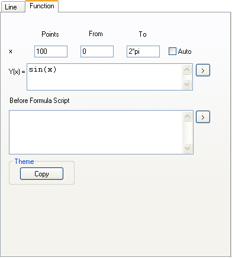
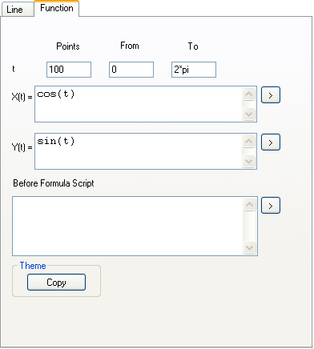
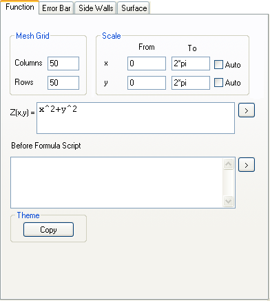

Das Dialogfeld Details Zeichnung des Funktionsdiagramms enthält die Registerkarte Funktion. Die Registerkarte enthält Bedienelemente für die benutzerdefinierte Anpassung der Formel, den Bereich der unabhängigen Variablen und die Datenpunktdichte. Die Registerkarte Funktion variiert ja nach Funktionstyp.
|

|

|

|
|
2D-Funktionsdiagramm
|
Parametrisches 2D-Funktionsdiagramm
|
3D-Funktionsdiagramm
|
Inhalt |
Dieses Textfeld ist verfügbar, wenn das Dialogfeld Details Zeichnung von einer 2D-Funktionskurve aus geöffnet wird.
Geben Sie die Anzahl der datenpunkte ein, die im Funktionsdiagramm angezeigt werden sollen.
Legen Sie den Anfang und das Ende des X-Bereichs (2D-Funktionsdiagramm) fest oder den Parameterbereich (parametrisches 2D-Funktionsdiagramm).
Diese Gruppe ist verfügbar, wenn das Dialogfeld Details Zeichnung von einem 3D-Funktionsdiagramm aus geöffnet wird.
Wenn Sie ein 3D-Funktionsdiagramm zeichnen, erstellt Origin als erstes eine Matrix und dann das Diagramm aus dieser Matrix. Legen Sie die Matrixdimensionen in den Bearbeitungsfeldern für Spalten und Zeilen fest. Dies bestimmt die Dichte der 3D-Gitternetzlinienoberfläche.
Diese Gruppe ist verfügbar, wenn das Dialogfeld Details Zeichnung von einem 3D-Funktionsdiagramm aus geöffnet wird.
Legen Sie den Anfang und das Ende der X- und Y-Bereiche fest.
Aktivieren Sie diese Option, damit Origin automatisch den X-Bereich (2D-Funktionsdiagramm) oder den X- und Y-Bereich (3D-Funktionsdiagramm) bestimmt.
Wenn dieses Kontrollkästchen deaktiviert ist, können Sie den Anfang und das Ende des X-Bereichs in den Feldern Von und Bis festlegen.
Dieses Kontrollkästchen ist verfügbar, wenn das Dialogfeld Details Zeichnung von einem 2D- oder 3D-Funktionsdiagramm aus geöffnet wird.
Definieren und modifizieren Sie die Formel, mit der ein Funktionsdiagramm erstellt wird.
Gängige mathematische und statistische Verteilungsfunktionen sind verfügbar, indem Sie auf die dreieckige Schaltfläche rechts neben dem Textfeld klicken. Weitere Einzelheiten zu diesen Funktionen finden Sie im Abschnitt Standardfunktionen von LabTalk.
Sie können eine Funktion auch mit Hilfe von allen durch Origin erkennbaren Operatoren direkt in das Textfeld eingeben. Für eine Multiplikation müssen Sie den Multiplikationsoperator (*) einfügen. Sie können ebenfalls jede von Origins Standardfunktionen aufrufen, auch wenn sie sich nicht über das Ausklappmenü mit der dreieckigen Schaltfläche verfügbar ist, oder jede andere Funktion, die sie definiert haben.
Sie können mehrzeilige LabTalk-Skripts in diesem Bearbeitungsfeld eingeben. Die Skripte werden ausgeführt, bevor der Ausdruck in dem Formelbearbeitungsfeld ausgeführt wird. Zusätzlich zu den Standardfunktionen und den benutzerdefinierten Funktionen können Sie Bereichsvariablen, Schleifen, über LabTalk zugängliche X-Funktionen und jedes LabTalk-Skript verwenden.
Sie können alle Einstellungen speichern, die Sie auf der Registerkarte Funktion in einem Design gespeichert haben und dieses Design dann anwenden, wenn Sie eine weitere Funktion definieren.
Um funktionszugehörige Einstellungen von einer Zeichnung in eine andere zu kopieren:
Weitere Einzelheiten zur Verwendung eines Designs in einem Funktionsdiagramm finden Sie hier.